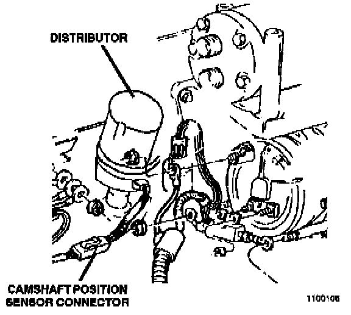

Operation CHARM
: Car repair manuals for everyone.
Русский
Home
>>
Jeep
>>
1997
>>
Grand Cherokee 4WD L6-4.0L VIN S
>>
Repair and Diagnosis
>>
Powertrain Management
>>
Sensors and Switches - Powertrain Management
>>
Sensors and Switches - Ignition System
>>
Camshaft Position Sensor
>>
Locations
Camshaft Position Sensor: Locations
Sensors For 2.5L And 4.0L.:
